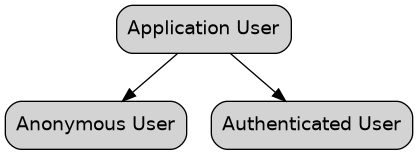
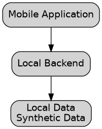

Workout Application
Overview
This project is a mobile workout application designed to help users plan, perform and track their training over time.
The application supports multiple forms of training, including strength training, cycling and running. It combines predefined training plans, custom workouts, workout tracking, progression, body composition tracking and statistics into a single application.
The application is designed around a simple user experience with minimal unnecessary onboarding and minimal collection of personal information.
The mobile application provides the primary user interface, while backend services provide authentication, persistent data storage, authorization and other functionality required by the application.
Purpose
The purpose of the application is to provide users with a structured system for training and tracking their long-term development.
The application should help users:
Follow structured training plans
Perform individual workouts
Record completed workouts
Track training progression
Track body composition
View training statistics
Create custom training plans
Use predefined training plans
Receive a Workout of the Day
Monitor long-term progress
The application should reduce the amount of manual planning required from the user while still allowing the user to control their training.
Design Principles
The application is designed around several principles.
Simplicity
The application should provide useful functionality without unnecessary complexity.
Users should be able to open the application and understand what they should do without completing extensive setup or questionnaires.
Minimal Data Collection
The application should only collect information that is necessary for its functionality.
An account should not require unnecessary personal information.
Structured Training
Training should have a clear structure rather than being limited to individual, disconnected workouts.
The application should allow users to follow training plans and progress through them over time.
Long-Term Progression
The application should help users understand how their training changes over time.
Progression should be based on recorded training rather than requiring the user to manually calculate everything.
User Control
Automation should simplify training rather than remove user control.
Users should be able to modify and customize their training when required.
Security
User-specific information must be protected from unauthorized access.
The application should treat the mobile client as an untrusted environment and enforce authorization on the backend.
Application Scope
The application covers several areas of training.
![digraph application {
rankdir=TB
fontname="Helvetica"
node [
shape=box
style="rounded,filled"
fontname="Helvetica"
]
application [
label="Workout Application"
]
strength [
label="Strength Training"
]
cycling [
label="Cycling"
]
running [
label="Running"
]
plans [
label="Training Plans"
]
tracking [
label="Workout Tracking"
]
body [
label="Body Composition"
]
statistics [
label="Statistics"
]
application -> strength
application -> cycling
application -> running
application -> plans
application -> tracking
application -> body
application -> statistics
}](../../../../_images/graphviz-e0679fe1220635f42a7a925f28a1a6e8fc05db42.png)
Application Scope
The different training areas share common concepts such as:
Training plans
Workouts
Sessions
Progression
History
Statistics
Users
The application supports both users who do not have an account and authenticated users.
Functionality that does not require persistent user data should remain available without requiring an account.
An account is required when functionality depends on persistent user-specific information.

User Model
Authenticated users can store and retrieve their personal training information across sessions and devices.
Workout of the Day
The Workout of the Day provides users with a predefined workout without requiring them to manually construct a workout.
The purpose of the feature is to provide a clear training activity that fits into the application’s overall training model.
The Workout of the Day can form part of a broader weekly training structure.
The feature requires access to backend services when the workout needs to be retrieved or generated dynamically.
Training Plans
Training plans provide structure over a period of time.
A plan can consist of multiple training periods, sessions and workouts.
![digraph plan {
rankdir=TB
fontname="Helvetica"
node [
shape=box
style="rounded,filled"
fontname="Helvetica"
]
plan [
label="Training Plan"
]
period [
label="Training Period"
]
sessions [
label="Training Sessions"
]
workouts [
label="Workouts"
]
activities [
label="Exercises / Activities"
]
plan -> period
period -> sessions
sessions -> workouts
workouts -> activities
}](../../../../_images/graphviz-5d8e18c30177325df2f3caff9bf91280691c4ec6.png)
Training Plan Structure
The application can provide predefined training plans as well as allow users to create custom plans.
Predefined plans can cover different training objectives and activities.
Examples include:
General fitness
Strength training
Cycling
Running
The exact training plans can evolve independently from the underlying application architecture.
Exercise Database
The application maintains a database of exercises and other training activities.
An exercise can contain information such as:
Name
Description
Muscle groups
Equipment
Movement category
Instructions
Training characteristics
The exercise database provides a consistent set of exercises that can be used throughout the application.
Exercises can be referenced by predefined workouts, training plans and custom workouts.
Strength Training
Strength training is based around exercises, sets, repetitions and resistance.
A strength workout may contain:
Exercises
Sets
Repetitions
Weight or resistance
Rest periods
Notes
The application can use the recorded performance to determine progression in future workouts.
Cycling
Cycling is treated as an endurance training activity.
Cycling workouts can contain measurements such as:
Duration
Distance
Speed
Power
Heart rate
Training intensity
The exact measurements available depend on the information available to the application.
Cycling activities can be included in training plans and recorded as completed training sessions.
Running
Running is treated as another endurance training activity.
Running workouts can contain measurements such as:
Duration
Distance
Pace
Speed
Heart rate
Training intensity
Running activities can be included in training plans and recorded as completed training sessions.
Workout Tracking
Users can record completed workouts and training sessions.
The information recorded depends on the type of activity.
![digraph tracking {
rankdir=LR
fontname="Helvetica"
node [
shape=box
style="rounded,filled"
fontname="Helvetica"
]
user [
label="User"
]
workout [
label="Workout"
]
session [
label="Completed Session"
]
history [
label="Training History"
]
statistics [
label="Statistics"
]
user -> workout
workout -> session
session -> history
history -> statistics
}](../../../../_images/graphviz-6c5238b2272164e106d4ce0fa8330c1cf5af50b6.png)
Workout Tracking
Workout history provides the foundation for progression and statistics.
Progression
Progression allows training to change as the user becomes more capable.
Depending on the type of training, progression can include:
Increasing resistance
Increasing repetitions
Increasing duration
Increasing distance
Increasing training volume
Increasing intensity
Changing training targets
The progression system should reduce the amount of manual calculation required from the user.
Users should still be able to adjust their training when necessary.
Deloading
Training plans can include periods where training stress is deliberately reduced.
A deload can reduce:
Training volume
Training intensity
Resistance
Duration
The purpose is to provide periods of reduced training stress before normal progression resumes.
![digraph progression {
rankdir=LR
fontname="Helvetica"
node [
shape=box
style="rounded,filled"
fontname="Helvetica"
]
training [
label="Training"
]
progression1 [
label="Progression"
]
progression2 [
label="Progression"
]
deload [
label="Deload"
]
progression3 [
label="Progression"
]
training -> progression1
progression1 -> progression2
progression2 -> deload
deload -> progression3
}](../../../../_images/graphviz-a234be2a3122f01954e8f1b78ebf3e1020d4e6c9.png)
Training Progression
Custom Training Plans
Users can create training plans based on their own requirements.
A custom plan can use the same exercises and activities available to predefined plans.
Users can determine aspects such as:
Training days
Exercises
Workouts
Sets
Repetitions
Training targets
Progression
Custom plans allow the application to support users who do not want to follow a predefined training program.
Body Composition
The application allows users to record body measurements over time.
Measurements can include:
Body weight
Waist
Stomach
Chest
Shoulders
Arms
Forearms
Legs
Calves
Measurements are stored historically so users can observe changes over time.
Body composition tracking is separate from workout performance but can be viewed alongside training history.
Statistics
The application provides statistics based on historical training and measurement data.
Statistics can include:
Training frequency
Training volume
Exercise progression
Personal records
Running performance
Cycling performance
Body weight trends
Measurement trends
Training consistency
Statistics should be derived from recorded information where possible rather than requiring users to manually calculate their progress.
Application Architecture
The application consists of a mobile client, backend services and persistent application data.
![digraph architecture {
rankdir=TB
fontname="Helvetica"
node [
shape=box
style="rounded,filled"
fontname="Helvetica"
]
mobile [
label="Mobile Application\n\nUser Interface\nApplication Logic\nWorkout Interaction"
]
backend [
label="Backend Services\n\nAuthentication\nApplication Services\nAuthorization"
]
data [
label="Application Data\n\nUsers\nExercises\nWorkouts\nPlans\nMeasurements\nStatistics"
]
mobile -> backend
backend -> data
}](../../../../_images/graphviz-61cdf6a137be97a6c24b4da7a872cf92187c239f.png)
High-Level Application Architecture
The mobile application provides the primary user interface.
Backend services provide functionality that requires persistent storage, authentication, authorization or server-side processing.
Mobile Application
The mobile application is the primary interface through which users interact with the system.
The mobile application is responsible for functionality such as:
Navigation
User interface
Workout interaction
Workout logging
Training plan presentation
Progression information
Statistics
Body composition tracking
Local application state
The application communicates with backend services when persistent data or backend functionality is required.
The mobile application should not contain privileged backend credentials.
Backend
The backend provides services required by the mobile application.
These services include:
Authentication
Persistent data storage
Application data access
Authorization
Backend application logic
File storage
The backend is responsible for protecting persistent user data and enforcing authorization.
Authentication
Authentication establishes the identity of an authenticated user.
The application uses authentication for functionality that requires persistent user-specific information.
The authentication system should be separated from authorization.
Authentication
|
v
Who is the user?
|
v
Authorization
|
v
What is the user allowed to access?
A user’s identity should be associated with their application data.
Authorization
Authorization determines which resources a user is allowed to access.
The mobile application should not be considered a trusted environment.
A user should only be able to access data for which they have permission.
![digraph authorization {
rankdir=LR
fontname="Helvetica"
node [
shape=box
style="rounded,filled"
fontname="Helvetica"
]
user [
label="User"
]
application [
label="Mobile Application"
]
backend [
label="Backend"
]
authorization [
label="Authorization"
]
data [
label="Protected Data"
]
user -> application
application -> backend
backend -> authorization
authorization -> data
}](../../../../_images/graphviz-8d3a98841dd62da6fd165fc0ccd75ceaa7fc0e52.png)
Authorization Model
Authorization must be enforced by backend services rather than relying solely on the mobile application.
Data Model
The application’s data is organized around several primary concepts.
![digraph data {
rankdir=LR
fontname="Helvetica"
node [
shape=box
style="rounded,filled"
fontname="Helvetica"
]
user [
label="User"
]
profile [
label="Profile"
]
plan [
label="Training Plan"
]
workout [
label="Workout"
]
exercise [
label="Exercise"
]
session [
label="Workout Session"
]
measurement [
label="Body Measurement"
]
statistics [
label="Statistics"
]
user -> profile
user -> plan
plan -> workout
workout -> exercise
user -> session
session -> workout
user -> measurement
user -> statistics
}](../../../../_images/graphviz-51646f2e7efa15f9ace37761ec82c41a46564b6e.png)
High-Level Data Model
The exact implementation of the data model can evolve as the application develops.
The conceptual model is centered around users, training plans, workouts, recorded sessions and historical progress.
Shared and User-Specific Data
The application contains both shared application data and user-specific data.
Shared application data can include:
Exercises
Exercise descriptions
Training plan definitions
Workout definitions
User-specific data can include:
Profile information
Workout history
Completed sessions
Custom training plans
Body measurements
Statistics
Preferences
![digraph data {
rankdir=TB
fontname="Helvetica"
node [
shape=box
style="rounded,filled"
fontname="Helvetica"
]
application [
label="Application"
]
shared [
label="Shared Data\n\nExercises\nTraining Plans\nWorkout Definitions"
]
user [
label="User Data\n\nWorkout History\nMeasurements\nPreferences\nCompleted Workouts"
]
application -> shared
application -> user
}](../../../../_images/graphviz-530ffec5f59913ba0832ece5579866354b1eed48.png)
Shared and User-Specific Data
User-specific data must remain isolated between users.
Storage
Structured application information is stored as application data.
Files and other objects that do not belong in the structured data model can be stored separately.
Examples include:
Exercise images
Profile images
Other application assets
User-uploaded files
Access to user-specific files must follow the same authorization principles as other user data.
Data Privacy
The application follows a data minimization approach.
Only information required for application functionality should be collected.
The application should avoid requiring unnecessary:
Personal information
Profile information
Questionnaires
Onboarding information
User-generated training information should be treated as private application data.
Environment Separation
The application uses separate environments for development, staging and production.
Development uses a local environment and synthetic data.
Staging is used for testing and verification.
Production contains real user data.
![digraph environments {
rankdir=LR
fontname="Helvetica"
node [
shape=box
style="rounded,filled"
fontname="Helvetica"
]
development [
label="Development\n\nLocal Environment\nSynthetic Data"
]
staging [
label="Staging\n\nTest Environment\nSynthetic Data"
]
production [
label="Production\n\nLive Environment\nReal User Data"
]
development -> staging
staging -> production
}](../../../../_images/graphviz-407b9b5aaf3dea7a5c05c879a98cca96d21e6e5a.png)
Environment Separation
The environments are logically separated.
Production data must not be used as development or test data.
Development Environment
The development environment allows the application to be developed without requiring access to production data.
The local environment contains a local representation of the backend and database.

Development Environment
Development data can be recreated from controlled seed data.
This allows multiple developers to work with consistent data without sharing real user information.
Development Data
Development data is synthetic data created specifically for development and testing.
Examples include:
Test User
Test Workout
Test Training Plan
Test Exercise
Test Measurement
Test Workout History
The development dataset can contain different scenarios required for testing application behavior.
For example:
A new user without training history
A user with completed workouts
A user with a long training history
A user with multiple training plans
A user with body measurements
Edge cases and invalid data
Development data should be reproducible so that a new development environment can be created consistently.
Staging Environment
The staging environment represents the application in a controlled environment before production.
It is used to verify:
Application functionality
Backend behavior
Data handling
Authentication
Authorization
Integration between application components
Staging uses synthetic test data.
Staging must remain separate from production.
Production Environment
The production environment is the live application environment.
It contains real users and real application data.
Production data can include:
User accounts
Workout history
Training plans
Completed sessions
Body measurements
Statistics
User preferences
Production therefore requires stronger access controls than development and staging.
Network Architecture
The mobile application communicates with backend services over a network connection.
![digraph network {
rankdir=LR
fontname="Helvetica"
node [
shape=box
style="rounded,filled"
fontname="Helvetica"
]
mobile [
label="Mobile Device\n\nWorkout Application"
]
network [
label="Network"
]
backend [
label="Backend Services"
]
data [
label="Application Data"
]
mobile -> network
network -> backend
backend -> data
}](../../../../_images/graphviz-76deb348e1a04b3ac565295e4d84a105a5126526.png)
Mobile Application Network Architecture
Communication between the mobile application and backend services should use secure transport.
The mobile application does not require a traditional web server architecture.
The underlying infrastructure required to operate managed backend services is provided by the backend platform.
Application Data Flow
A typical workout operation follows a flow similar to:
![digraph dataflow {
rankdir=LR
fontname="Helvetica"
node [
shape=box
style="rounded,filled"
fontname="Helvetica"
]
user [
label="User"
]
mobile [
label="Mobile Application"
]
authentication [
label="Authentication"
]
backend [
label="Backend Services"
]
authorization [
label="Authorization"
]
data [
label="Workout Data"
]
user -> mobile [
label="Record workout"
]
mobile -> authentication [
label="User session"
]
mobile -> backend [
label="Request"
]
backend -> authorization [
label="Verify access"
]
authorization -> data [
label="Authorized access"
]
}](../../../../_images/graphviz-930f9a013307a441bc477d780190404295c4fbf5.png)
Workout Data Flow
The backend remains responsible for determining whether the requested operation is permitted.
Security Boundaries
The application contains several security boundaries.
The mobile device is controlled by the user and must therefore be treated as an untrusted environment.
The backend is responsible for enforcing access to protected data.
User
|
v
Mobile Application
|
v
Backend
|
v
Authorization
|
v
Protected Data
The application should not rely on client-side controls as the only protection for sensitive operations.
Application Lifecycle
The application is designed to evolve continuously as new functionality is introduced and existing functionality is improved.
The general lifecycle consists of:
![digraph lifecycle {
rankdir=LR
fontname="Helvetica"
node [
shape=box
style="rounded,filled"
fontname="Helvetica"
]
requirements [
label="Requirements"
]
design [
label="Design"
]
implementation [
label="Implementation"
]
verification [
label="Verification"
]
release [
label="Release"
]
operation [
label="Operation"
]
improvement [
label="Improvement"
]
requirements -> design
design -> implementation
implementation -> verification
verification -> release
release -> operation
operation -> improvement
improvement -> requirements
}](../../../../_images/graphviz-93a11e85cbd5fb46abc9dd7fcb382c40a87cfeba.png)
Application Lifecycle
Changes to application functionality should consider both functional requirements and the security of user data.
Future Expansion
The architecture is intended to allow additional functionality to be introduced without fundamentally changing the application.
Potential future capabilities may include:
Additional training types
Additional exercise categories
More advanced progression models
Additional statistics
Training recommendations
Additional user customization
Integration with external fitness data
Additional application services
New functionality should follow the existing principles of simplicity, data minimization, user control and secure handling of user data.
Final Architecture
The overall application can be represented as:
![digraph architecture {
rankdir=TB
fontname="Helvetica"
node [
shape=box
style="rounded,filled"
fontname="Helvetica"
]
mobile [
label="Mobile Application\n\nTraining\nWorkouts\nPlans\nTracking\nStatistics"
]
backend [
label="Backend Services\n\nAuthentication\nApplication Services\nAuthorization"
]
data [
label="Application Data\n\nUsers\nExercises\nWorkouts\nPlans\nMeasurements\nStatistics"
]
storage [
label="File Storage\n\nApplication Assets\nUser Files"
]
mobile -> backend
backend -> data
backend -> storage
}](../../../../_images/graphviz-618bcaa1aca7024c7d1d826884bb824d1b960219.png)
Workout Application Architecture
The application provides a single mobile interface for structured training, workout tracking and long-term progression.
The architecture separates the mobile application from backend services and persistent data while maintaining a simple user experience.
The system is designed to support multiple types of training, protect user-specific information and allow the application to evolve as new training functionality is introduced.